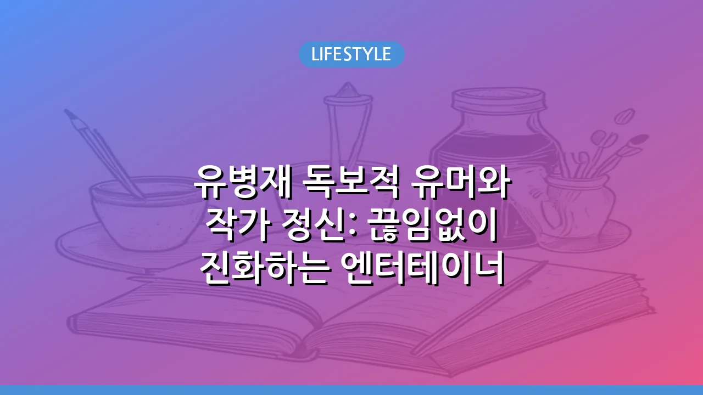

유병재 독보적 유머와 작가 정신: 끊임없이 진화하는 엔터테이너
유병재 독보적 유머와 작가 정신: 끊임없이 진화하는 엔터테이너
유병재는 단순한 코미디언을 넘어 작가, 예능인, 스탠드업 코미디언 등 다양한 영역에서 자신만의 독특한 색깔을 구축하며 대중에게 깊은 인상을 남기고 있는 인물입니다. 그의 유머는 때로는 날카로운 사회 비판을 담고, 때로는 기발한 상상력으로 예상치 못한 웃음을 선사하며, 이 시대의 젊은 세대가 느끼는 공감대를 형성하는 데 탁월합니다. 본 글에서는 유병재가 어떻게 독보적인 엔터테이너로 자리매김했는지, 그의 다양한 활동과 그 속에 담긴 의미를 심층적으로 탐구하고자 합니다.
유병재, 그를 정의하는 독보적 유머 코드
유병재의 이름 석 자를 들었을 때 가장 먼저 떠오르는 것은 단연 그의 독특하고 예측 불가능한 유머입니다. 그는 tvN 'SNL 코리아'의 작가이자 코너 출연자로 대중에게 얼굴을 알리기 시작했습니다. 당시 '극한직업', '말 같지도 않은 소리', '위켄드 업데이트' 등 여러 코너에서 보여준 특유의 B급 감성과 현실 풍자는 수많은 시청자의 공감을 얻으며 그를 '천재 코미디 작가'로 각인시켰습니다. 그의 유머는 단순히 웃음을 유발하는 것을 넘어, 사회의 부조리나 인간 심리의 이면을 꿰뚫는 날카로운 통찰력을 내포하고 있습니다. 이는 겉으로는 평범해 보이는 상황 속에서 예상치 못한 반전과 깊은 여운을 남기며 유병재만의 독보적인 코미디 스타일을 완성했습니다. 특히, 그의 초창기 코미디는 다소 불편할 수 있는 주제를 과감하게 건드리면서도, 결국에는 시대를 관통하는 메시지를 담아내며 '유병재스러움'의 정수를 보여주었습니다.
작가 유병재의 날카로운 시선: 사회 풍자와 메시지
유병재는 단순히 대본을 쓰는 것을 넘어, 직접 글을 통해 자신의 생각과 메시지를 전달하는 데 능숙한 '작가'이기도 합니다. 그의 단편 소설집 '블랙 코미디'나 에세이 '말장난' 등은 그의 날카로운 시선과 비판 의식을 엿볼 수 있는 대표적인 작품들입니다. 그는 일상 속에서 마주하는 불합리한 상황이나 사회적 이슈들을 자신만의 방식으로 비틀어 보여주며 독자들에게 생각할 거리를 던져줍니다. 특히 그의 블랙 코미디는 불편함을 유발하면서도 결국에는 고개를 끄덕이게 만드는 공감대를 형성하며, 단순히 웃고 넘어가는 것을 넘어 깊이 있는 성찰을 유도합니다. 이러한 작가적 역량은 유병재를 단순한 예능인을 넘어, 사회 현상을 예리하게 포착하고 해석하는 지식인으로서의 면모를 보여줍니다. 그의 글은 때로는 직설적이고 때로는 우회적이지만, 항상 본질을 꿰뚫는 힘을 가지고 있어 많은 독자에게 깊은 인상을 남기고 있습니다.
예능인 유병재의 다양한 얼굴: 방송 활동과 캐릭터
'SNL 코리아'를 통해 얼굴을 알린 이후, 유병재는 다양한 예능 프로그램에서 활약하며 시청자들에게 친근한 이미지를 쌓았습니다. 특히 MBC '전지적 참견 시점'에서 매니저와의 끈끈한 관계와 예상치 못한 순수하고 허당기 있는 모습은 그동안 시청자들이 알던 날카로운 유병재와는 또 다른 매력을 선사하며 큰 사랑을 받았습니다. 그는 자신을 꾸밈없이 드러내고, 약점마저도 웃음으로 승화시키는 능력을 통해 대중과 한층 더 가까워졌습니다. 또한, 그는 '아는 형님', '런닝맨' 등 다양한 게스트로 출연하거나 패널로서 프로그램에 신선한 활력을 불어넣으며 '유병재'라는 독자적인 캐릭터를 확고히 구축했습니다. 그의 예능 활동은 기존의 코미디 작가 이미지를 넘어, 인간적인 매력을 발산하며 폭넓은 시청자층을 확보하는 데 기여했습니다.
스탠드업 코미디: 유병재의 새로운 도전과 성장
유병재의 활동 중 빼놓을 수 없는 부분이 바로 스탠드업 코미디입니다. 그는 '블랙 코미디'라는 타이틀로 여러 차례 스탠드업 코미디 쇼를 개최하며, 마이크 하나에 의존해 관객과 직접 소통하는 코미디의 진수를 보여주었습니다. 이 무대에서 그는 사회 이슈, 개인적인 경험, 인간관계 등 다양한 주제를 솔직하고 거침없는 입담으로 풀어내며 관객들을 열광시켰습니다. 스탠드업 코미디는 대본에 얽매이지 않고 즉흥성과 순발력을 발휘해야 하는 장르로, 유병재의 뛰어난 글쓰기 능력과 더불어 현장감 있는 소통 능력을 증명하는 기회가 되었습니다. 그의 스탠드업 코미디는 매번 새로운 주제와 형식으로 진화하며, 코미디언으로서 그의 끊임없는 성장을 보여주는 중요한 지표가 되고 있습니다. 특히 그의 스탠드업 코미디는 고정된 틀을 깨고 끊임없이 변화를 시도하며 국내 스탠드업 코미디의 지평을 넓히는 데 일조했습니다.
유병재의 팬덤과 영향력: 공감과 소통의 아이콘
유병재는 단순히 웃음을 주는 것을 넘어, 젊은 세대의 고민과 감정에 깊이 공감하는 아이콘으로 자리 잡았습니다. 그의 발언이나 콘텐츠는 종종 온라인에서 큰 반향을 일으키며, '유병재 어록'이라는 신조어까지 만들어낼 정도입니다. 그는 팬들과의 소통에도 적극적인데, 그의 굿즈는 단순히 물건을 넘어 유병재 특유의 B급 감성이 담긴 재치 있는 메시지를 담고 있어 많은 이들에게 인기를 끌었습니다. 이러한 활동들은 유병재가 대중과 소통하고 공감대를 형성하는 데 얼마나 능숙한지를 보여줍니다. 그의 팬덤은 단순한 연예인을 넘어, 자신들의 생각을 대변하고 유쾌하게 표현해주는 존재로 유병재를 인식하고 있습니다.
- 유병재의 주요 특징:
- 독보적인 B급 감성과 블랙 코미디
- 날카로운 사회 비판 의식을 담은 작가적 역량
- 친근하고 허당기 있는 예능 캐릭터
- 솔직하고 거침없는 스탠드업 코미디
- 젊은 세대의 공감대를 형성하는 소통 능력
앞으로의 유병재: 끊임없는 변화를 기대하며
유병재는 특정 틀에 갇히지 않고 끊임없이 새로운 분야에 도전하며 자신의 영역을 확장해왔습니다. 작가에서 코미디언, 예능인, 그리고 스탠드업 코미디언에 이르기까지, 그의 행보는 늘 예측 불가능하면서도 흥미진진했습니다. 그는 현재에 안주하지 않고 스스로에게 새로운 질문을 던지며, 그 답을 찾아가는 과정을 대중과 공유합니다. 앞으로 유병재가 또 어떤 새로운 모습으로 우리에게 신선한 웃음과 깊이 있는 메시지를 전달할지, 그의 끊임없는 진화가 더욱 기대되는 이유입니다. 그의 행보 하나하나가 이 시대의 문화 흐름을 읽는 중요한 지표가 될 것입니다. 유병재가 보여줄 다음 행보가 그 어느 때보다 궁금하고 기대됩니다.
🔗 이 글도 함께 보면 좋아요: 2026 FIFA 월드컵 개최지 및 변화: 역대급 확장 대회 완벽 분석